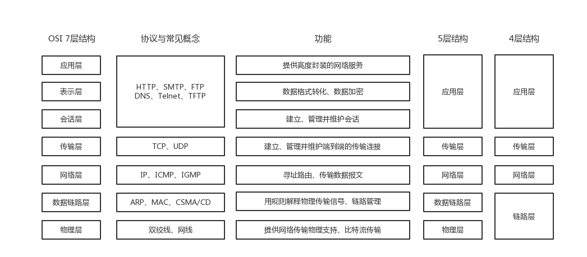
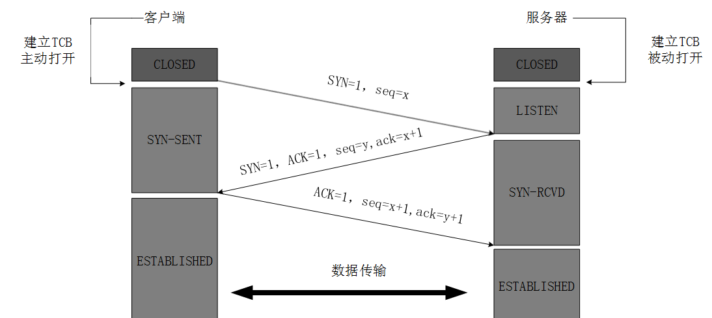
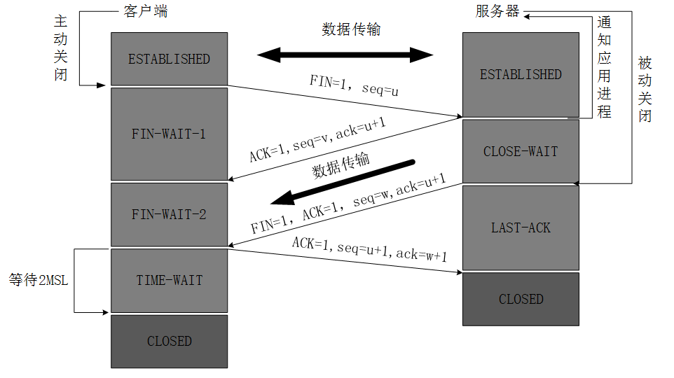
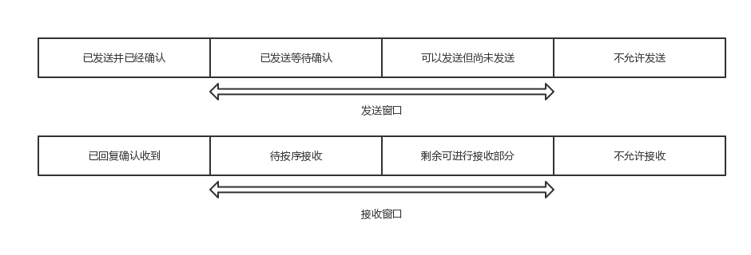

TCP三次握手与四次挥手及拥塞控制
TCP处于7层结构的第四层，这是一个比较关键的位置，上三层是封装的应用，下三层是相对基础的传输。TCP在这一层承担了为“用下层的传输机制打造一套传输方式为上层提供安全的传输”的任务。其中我们关注较多的就是TCP的三次握手与四次挥手及拥塞控制的方式。
OSI七层结构

可以看出，OSI中最受关注的就是网络层、传输层和应用层。物理层负责比特流的传输，一般地，我们不关心这一层的实现情况。数据链路层是负责解释物理层传输的比特流，
OSI结构的封装特点
OSI结构保证了多台服务器间层与层的对应关系、单台服务器间各层的透明关系。
比如两台机器A和B，在任何时刻A的任意一层比如网络层都直接对应于B的网络层。对于A和B的两个网络层来说，他们认为自己是直接和对面的网络层“交流”的。实际上从物理上来看，经历了A的数据从网络层到数据链路层再到物理层，再传输到B，再从物理层到数据链路层到网络层的流程。但是实际的操作对于两方的网络层并不可见，OSI结构中各层之间进行了封装，上层不关心下层具体如何实现，只需要“调用函数”即可，耦合度低。
局域网与互联网的概念差异
局域网就是在固定的一个地理区域内由2台以上的电脑用网线和其他网络设备搭建而成的一个封闭的计算机组。局域网内部可以互相访问，局域网内部会给每个机器分配内部的IP，局域网也常常被叫做内网。城域网、广域网只是局域网在范围上的扩大，这里不做讨论。互联网是多个局域网的集合，如果我们想要和外面的世界（其他的局域网系统）互联，需要路由器和互联网交换数据，互联网也有一个全球统一的IP，这个IP是外网IP和局域网的内网IP是两个东西，我们称互联网为外网。我们和外部网络链接依靠的是外网IP。我国的网络只是算是广域网，运营商将广域网的IP和互联网的IP会做一个映射。
ARP、MAC与IP的概念差异
对于任意一台机器而言，在外网上他的32位IPv4地址是唯一的但不是固定的。因为IP有限而且要全球唯一，所以供应商会在他的IP池中保留闲置没有使用的IP，当机器联网则为其分配IP，所以每次联网时机器的IP可能不同。这样会导致一个问题，如果IP并不是标识某一个机器id的作用，那么在分配IP时如何确认是哪一台机器需要被分配呢？此处使用了MAC地址的概念，48位MAC地址是物理地址，在机器出场时就将其烧到网卡中，除非更换网卡否则MAC地址不变。在开机分配IP时通过ARP(地址协议解析)的方法传输报文将IP与MAC关联起来，ARP协议实现任意网络层地址到任意物理地址的转换。
那么MAC地址真的能保证全世界唯一么？不能。MAC地址是由48位十六进制字符串组成的，前24位标示不同厂商的代码，也称为唯一的标示符。后24位是由各厂商自行分配的，称为拓展标示符。虽然容量很大，但是还是存在理论重复的可能。但是两点确保了不会因为唯一性出错。
- 外网IP分配到局域网，局域网分配子网时通过ARP映射MAC，所以只要确保局域网内部MAC不重复即可
- 如果局域网内部MAC发生了重复，ARP可以将重复的MAC做一些改动，来避免重复，因为我们通过IP映射MAC时读取的是ARP上缓存的MAC信息，并不会到硬件上读取，所以只要改变了缓存的数据即可
综上所述我们得出结论，在任何时刻MAC地址都能满足局域网唯一，在某一个时刻IP地址都能满足全球唯一。但是实际上这两种概念是有些重复的，他们都是作为一种标识，为什么需要这两者呢？
- 为什么有了IP还有MAC？ MAC早于IP出现，而且不一定所有的网络都使用IP协议，所以MAC存在是有必要的
- 为什么有了MAC还有IP？ 不同厂商的MAC格式有很大不同，用各类MAC来标识不规范，而且MAC本身没有意义，只是表示地址，而IP经过划分概念清晰
- 为什么OSI中的IP层要映射到MAC，不用MAC不行么？ IP处于网络层，MAC处于数据链路层，OSI中各层间是解耦透明的，IP并不关心下层如何实现这种标识的概念，用MAC地址是合理的
TCP和UDP区别
UDP特点
- UDP只是在IP协议数据报的基础上增加了一点差错检测，复用的功能，所以功能很有限，实际应用也很有限
- UDP是无连接的，接收方并不会阻塞等待接收
- UDP和IP一样是不可靠的，数据包可能会丢失或者出错
- 相比较TCP更快速，但是不稳定，比如在视频等场合，允许数据丢失，但是要求速度快
- UDP支持一对一，一对多，多对多等通信方式
TCP特点
- TCP是面向连接的，在进行TCP传输之前会进行三次握手确保数据可靠
- 同样，结束的时候也会进行四次挥手，确保传输结束，交换机是双全工通信
- TCP是点到点的通信
三次握手
看到过一个题目：“如何利用UDP实现可靠连接”。个人认为，这道题目的考察点在于TCP的三次握手。因为我们知道TCP是使用不可靠的IP协议完成了可靠的传输，而UDP是IP的一种简单包装。我们用UDP实现三次握手，也是一个可靠的传输了。这道题目考察点很深刻，真正理解网络的同学才能理解考官的出题意图。

- 客户端和服务端打开连接，服务端进入监听模式Listen
- 客户端向服务端发送消息，SYN=1，ACK=0，seq=x（本次服务开始的初始序号），进入SYN-SENT
- 服务端接收到消息，向客户端发送SYN=1，ACK=1，seq=y（服务端初始序号），ack=x+1（表示希望客户端下一个从x+1开始发送），进入SYN-RCVD
- 客户端接受到回执，向服务端再发送SYN=1，ACK=1，seq=x+1（开始发送x+1），ack=y+1（希望对方下一个发送y+1），进入完成状态
- 服务端收到消息也进入完成状态
四次挥手

- 客户端先进入关闭状态，发送请求FIN=1，ACK=0，seq=u（u-1是最后发送给服务端的序号），状态变为FIN-WAIT1
- 服务端接收到请求，通知响应的服务即将关闭，也进入关闭状态，发送FIN=0，ACK=1，seq=w（服务端向客户端发送的最后一个序号），ack=u+1，进入CLOSE-WAIT状态等待其他服务的关闭
- 其他服务关闭后，且客户端没有重发请求，服务端再次发送一条，FIN=1，ACK=1，seq=v，ack=u+1，进入LAST-ACK状态
- 客户端接受到消息之后，会发送一条消息FIN=0，ACK=1，seq=u+1，ack=v+1表示确认关闭，之后经过一段时间再关闭，因为如果直接关闭，最后这条消息没被服务端接收到，服务端会以为出了问题重发，但是客户端已经关闭，服务端就不能正常关闭了
滑动窗口

- 为了不至于每一个数据都要发送一句应答影响效率，所以可以多个数据统一返回一个应答
- 发送者每收到一个应答，后沿就可以移动指定的字节。此时若窗口大小仍然没变，前沿也可以移动指定字节。没有多余空间时，发送者必须等待确认应答
- 接收者收到的字节会存入接收窗口，接收者会对已经正确接收的有序字节进行累计确认，发送完确认应答后，接收窗口就可以移动指定字节。如果某些字节并未按序收到，接收者只会确认最后一个有序的字节，从而乱序的字节就会被重新发送
拥塞控制
慢开始算法与拥塞避免算法
- 发送方维护一个发送窗口而且会动态变化。发送方还维护一个慢开始门限。 发送窗口 < 慢开始门限：使用慢开始算法 发送窗口 > 慢开始门限：使用拥塞避免算法 发送窗口 = 慢开始门限：使用慢开始算法或拥塞避免算法
- 开始1，2，4，只要不阻塞就*2，一直到发送窗口>慢开始门限改用拥塞避免算法
- 拥塞避免算法，每次收到确认应答后都将发送窗口+1
- 如果遇到超时重传的情况，此时：AIMD：a）慢开始门限设为当前发送窗口的一半； b）发送窗口设为1； c）启用拥塞避免算法；
快重传算法与快恢复算法
- 快重传原理：因为TCP具有累计确认的能力，因此接收者收到一个分组的时候不会立即发出应答，可能需要等待收到多个分组之后再同一发出累计确认。但快重传算法就要求，接收者如果接收到一个乱序的分组的话，就必须立即发出前一个正确分组的确认应答，这样能让发送者尽早地知道有一个分组可能丢失
- 快恢复原理：当发送者收到同一个分组的三个确认应答后，就基本可以判断这个分组已经丢失了；这时候无需等待超时，直接执行上述三部